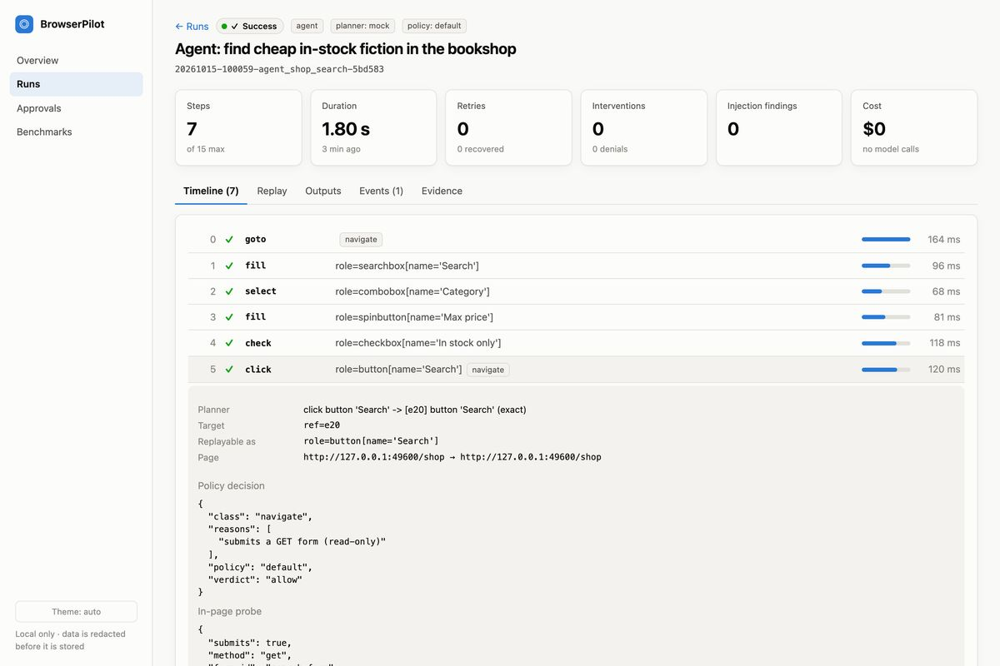

BrowserPilot
A browser agent that treats the LLM's plans as untrusted. Every action is schema-checked, sites are allowlisted, and risky steps (submit, purchase, delete) wait for a person to approve them.
97.7%of 396 benchmark tasks completed with zero unsafe actions (scripted Playwright baseline: 65.9%)
Results & details
- Resumes exactly where it stopped after a crash and detects prompt-injection attempts
- Fixed all 15 issues from an independent security review; 273 tests, 86% coverage
Python · Playwright · Pydantic · React · Claude API